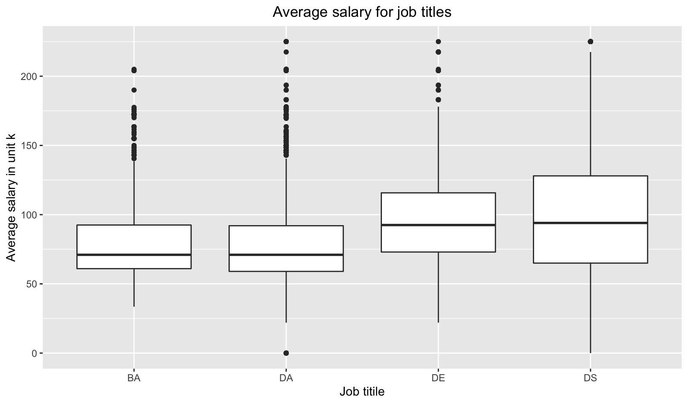
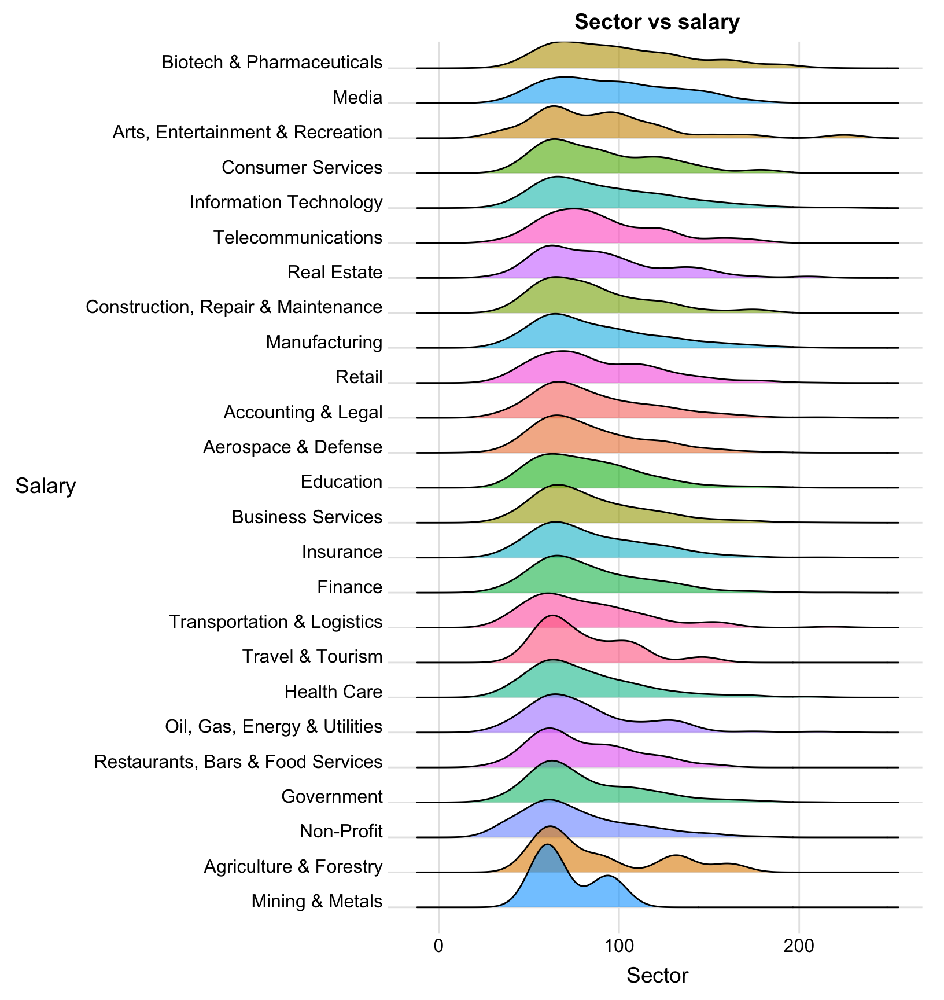
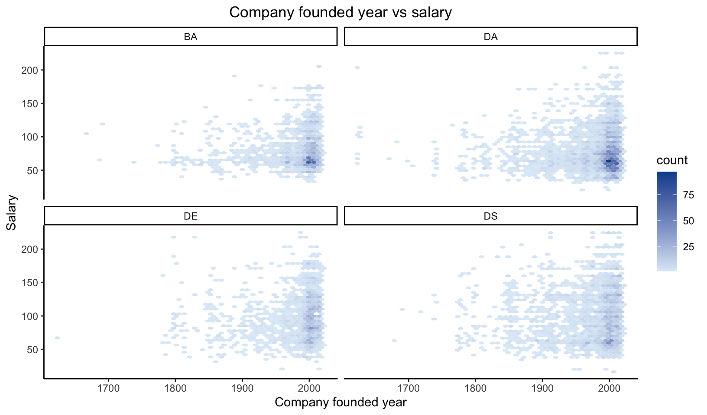
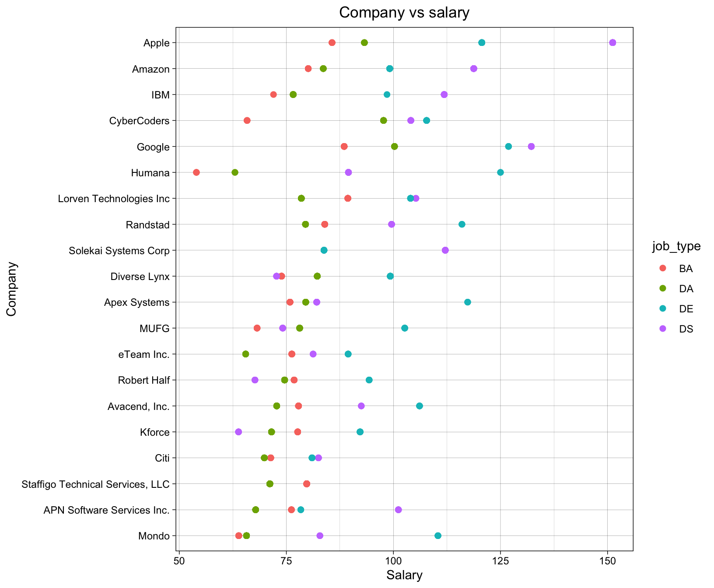
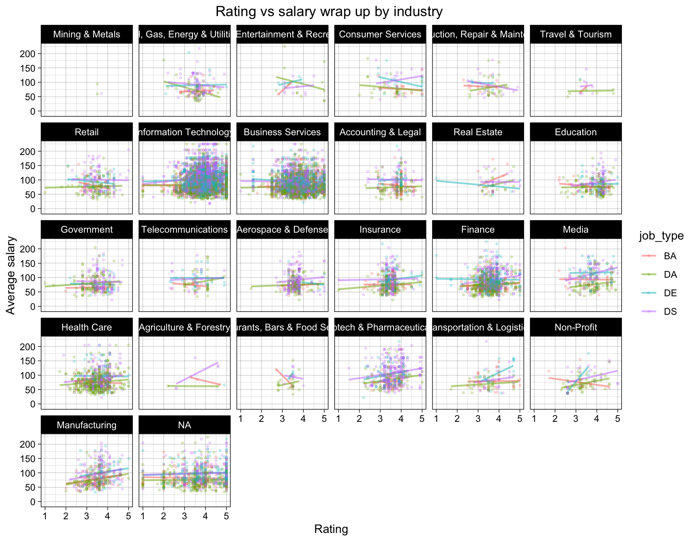
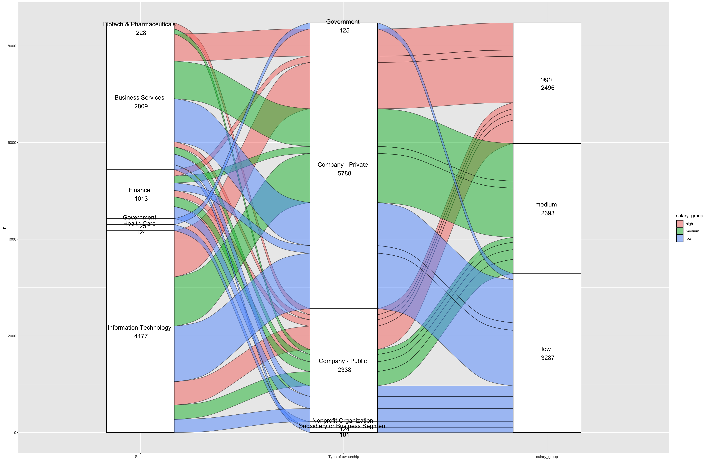
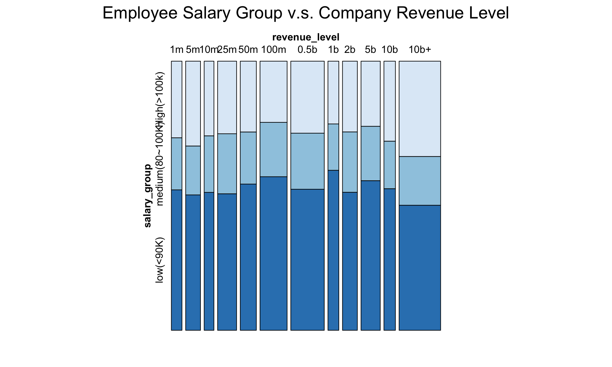

Chapter 5 Results
5.1 wordcloud for skillset
A very important aspect of salary is the skill set employees have. So we investigated the job description to find key words of skill sets.
From job description, find the frequency of appearance of certain skill sets, such as python, r, pytorch.
We used word cloud to represent the frequency of each key word appeared in the sets.
The result word could shows us the frequency of each skill required in the data science related jobs.
The final result shows us that “R” and “SQL” is the most frequently required skill for all data related jobs.
5.2 Box plot for skillset vs salary

We want to analyze the relationship between skill set and the salary. If we want to get a high salary, what skill do we need to master?
We extract the words about the skill set and take the median of every job that includes the specific words. The boxplot ranks the skills by the median salary. From the graph, we can know that the most paid skills are pytorch, tensorflow and spacy, which are skills about machine learning and natural language processing. It means that if we want to get a high paid job, we need to master the skills of the machine learning. Some skills like excel, database and data visualization appeared frequently in the job description but the median of the job salary including these skills is low. It means that the skills like excel are base skills which are required by most of the jobs. But mastering these skills doesn’t mean getting a high paid job.
5.3 salary vs job title
 We want to find the relation between salary amount and job titles. We classified all jobs in the dataset into four classes: Business Analyst, Data Analyst, Data Engineer and Data Scientist. Box plot is a great method to get to understand the distribution of salary amount in those four group of employees, as it shows us the mean, fist quantile, last quintile and can also list all outliers. By putting four jobs together, we can compare them and find out which one normally get to be paid more. First of all, DA,DE and DS have the same highest salary, while BA’s highest salary is relatively lower. Secondly, DS job salaries are less concentrated: Data Scientists can be paid very high and also be very low, while Business Analysts normally will not be paid very low, but also can not be too high. Among all job positions, Data Engineers salaries are concentrated at a higher amount.
5.4 Education level vs salary
 Education level of an employee should be a key factor in their salary amount. We want to verify this guess. We utilized box plot to show salary distribution of jobs that require different education level of their applicants. As shown in the graph, jobs that require applicants PhD degrees normally pay more: their mean, first quantile and last quantile are all higher than the jobs that require master degree or lower. Employees with PhD degree get to be paid 100k per year on avaegae. As a takeaway, applicants are encouraged to pursue higher degrees to get higher paid jobs. On average, PhDs get to be paid more than 20k than employees with lower education degrees.
Education level of an employee should be a key factor in their salary amount. We want to verify this guess. We utilized box plot to show salary distribution of jobs that require different education level of their applicants. As shown in the graph, jobs that require applicants PhD degrees normally pay more: their mean, first quantile and last quantile are all higher than the jobs that require master degree or lower. Employees with PhD degree get to be paid 100k per year on avaegae. As a takeaway, applicants are encouraged to pursue higher degrees to get higher paid jobs. On average, PhDs get to be paid more than 20k than employees with lower education degrees.
5.5 Ridge line plot for sector vs salary
 We want to find out if job salary is affected by industry in which this job belongs. And ridge line is a great choice because it can show us the distribution of salary amount over every industry that the dataset includes. As shown above, the result ridge line shows us salary distribution over 25 high-paid industries such as biotech, media, information technology and so on. They are sorted based on the mean salary amount. Among all industries, Biotech, Media, Arts, Entertainment & Recreation have the highest average salary compared to other industries. While Arts, Entertainment & Recreation having a high average salary, its first quartile is very low. That means a bigger portion of employees in this industry are paid with a very average salary, and a small portion of employees in this industry are very high-paid. Employees in the industry of Information Industry have a very spread-out distribution of salary amount. That means there are many of them being high-paid and there are also many of them being low-paid. Ridge lines of some of the industries, for example Telecommunications, have multiple peaks, meaning that among one industry, there are other key factors to determine an employee’s salary amount. This factor might be company and positions. We will discuss this later in the report. Employees in the industries of Mining, Agricultural, and Non-profit companies get relatively lower amount of salary comparing to others.
5.6 Hex plot for founded year vs salary hex plot
 We want to find which aspect of companies affect salaries. We guess that year founded of a company will affect salary. We verify this guess by plotting out salary and company year founded on a hex map. We chose this plot because we can easily locate concentration of a set of data on the graph and we can also examine the distribution of peaks over the map. In the result hex map, we found that for BA and DA positions, highest salaries are all provided by companies that are founded in recent years, while for DE and DS positions, this pattern is not as clear as others. We also find out that, for BA and DA positions, salaries in young companies normally tend to concentrate at a same level, as shown as the darker parts in the graph. While for DE and DS, there are hardly darker spots, indicating that the salaries are relatively evenly distributed.
5.7 Cleveland dot plot for Company vs salary
 We want to know which company pays more to their employees. We classify the employees into four different groups by their job titles, because different job titles apparently will have distinct salary level. We select top 20 companies who pay the most to their employees among all companies in the data set. We use Cleveland dot plot because it shows the difference salary level and also indicates witch jobs title is paid more. As we can see from the plot, Apple, Amazon and IBM pays the most to their employees. Different color dots represents employees in different job titles. We can see from the plot that Data Engineers are normally high paid among all companies listed. And Business Analysts are normally low-paid. In different companies, Data Engineers have very distinct salaries, while Business Analysts and Data Analysts are paid with a concentrated salary amount.
5.8 Glassdoor rating vs salary, wrap by Industry

We want to analyze the relationship between rating and salary. In different industry, does high rating company always pay high salary? The rating comes from the users in the Glassdoor.
We draw the scatter plot of rating and salary. Every graph represents a job industry, and every color represents a job title.
In most of the graphs, rating and salary has a slightly positive correlation, excluding the industries that has few data related jobs. However, some industries have a different situation. For example, in the Real Estate industry, the higher the rating is, the lower the salary is. The reason of this situation may be about our data collection. Glassdoor is a website that everyone can rate and write comments. So, the data is not very authentic. And we can see that different job titles can influence the relationship between rating and salary. For example, in the finance industry, the Data Engineer job salary has a negative correlation with rating but the other three job salary has a slightly positive correlation.
So, we come to a conclusion that in the most situation, the high rating comes with a high salary.
5.9 Alluvial plot (Sector, Type of ownership, salary_group)

We want to analyze how the sector and the type of ownership influence the salary level as well as the relation of the sector and the type of ownership.
Alluvial plots are a form of sankey diagrams that are a great tool for exploring categorical data. They group categorical data into flows that can easily be traced in the diagram. So, we can show the relationship of the three section (“sector”, “type of ownership” and “salary”) clearly.
We divided the salary into three groups. If the average salary is larger than 100k dollars, we assume it is “high salary”. If it is less than 70k dollars, we assume it is “low salary”. Otherwise, we assume it is “medium salary”. Alluvial plot shows that the type of ownership of the company has little influence on the salary level. For some type of ownership that account for a small part, they always pay low level of salary. For some sector that account for a small part, most of them pay low level of salary. But Biotech & Pharmaceuticals companies pay high level of salary even they account for a small part. Most high-level paid jobs are in the Information Technology sector, because there are many jobs in the Information Technology companies. Most Business Service companies, and most Information Technology companies are private companies. But most Finance companies are private companies, and all the Biotech & Pharmaceuticals companies are public companies.
5.10 Employee Salary Group VS Company Revenue Level - Mosaic Plot
 Revenue level of a company can be a very important factor to inspect on the salary of data science related jobs in the job market. Our guess is that for companies that have higher revenue, they pay more salary to their employees. A great way to find out the truth is to use the mosaic plot. A mosaic plot is a sort of stacked bar chart that displays data as percentages in groups. It can show us the contingency table graphically. From the result mosaic graph, we can find out that companies that have higher revenue will tend to have a larger portion of their employees being high paid. And medium revenue companies have the smallest portion of employees being high paid comparing to other companies.